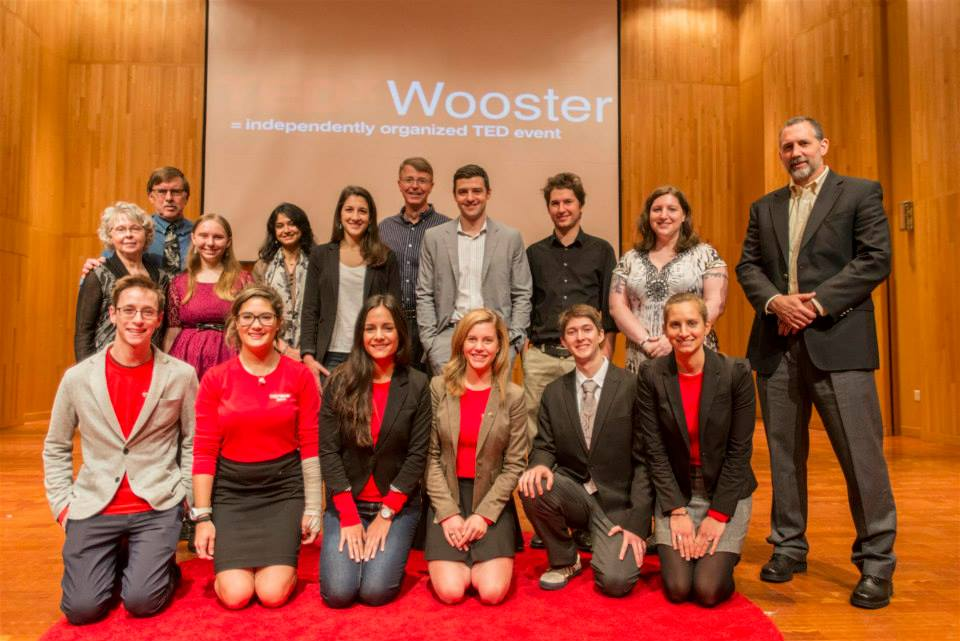

TEDX Wooster

Started by Christina Haupt '14, TEDxWooster was brought to the college, because Haupt wanted to show fellow students that "when there is a will there is a way."
The TEDx platform lends itself to a diverse range of ideas, that highlight the importance of following your passions in life.
TED stands for Technology, Entertainment and Design; concepts that are believed to be the primary initiators of the incubator known as Silicone Valley.
The non-profit organization TED - "ideas worth sharing" - is about giving ideas a voice and providing them with an audience, that can act as a network,
giving these ideas motion and setting them into action.
The TEDx Wooster team has completed three events thus far, successfully bringing students, alumni, and the greater Wooster community together to share important ideas.
The team is looking forward to planning their next annual TEDxWooster event for 2015. If you are interested in being a part of the team, or would like to help bring in
speakers for coming TEDxWooster talks, contact Noah Megregian at nmegregian16@wooster.edu.